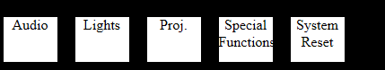
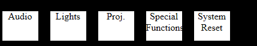

# global constants
MODEL_PATH = 'C:\Users\jixinge\Documents\america\comp523\wamp\www\sikuli\amx.sikuli'
JSON_LIB_PATH = 'C:\Users\jixinge\Documents\america\comp523\wamp\www\sikuli\amx.sikuli\simplejson'
IE_PATH = 'c:\Program Files\Internet Explorer\iexplore.exe'
AMX_ADDRESS = 'localhost/src/AMXmain.html'
IMG_EXT = '.png'
# the direct import does not work for sikuli
# need to first append to system path
import sys
sys.path.append(MODEL_PATH);
sys.path.append(JSON_LIB_PATH);
from model import Model
import simplejson as json
# start a new IE window and go to the AMX home page
# returns the app object of the ie window
def startNewIEWindow():
ie = App.open(IE_PATH);
wait(Pattern().similar(0.50),10)
sleep(0.4)
if exists(Pattern().similar(0.49)) is not None:
type (AMX_ADDRESS)
else:
click(Pattern( ).similar(0.50).targetOffset(79,7))
type(AMX_ADDRESS)
type(Key.ENTER)
wait(Pattern().similar(0.66),10)
return ie
# given the list of buttons that should be clicked
# click the buttons, page by page
def clickButtons(diff_list):
# for each page, click the buttons on that page which
# are specified in the diff_list
for page in Model.pages.keys():
#first go to that page
click(Pattern(page+IMG_EXT).similar(0.60))
if page != 'proj':
continue
wait(Pattern(page+'Page'+IMG_EXT).similar(0.40))
page_buttons = Model.pages[page];
for button in diff_list:
if button in page_buttons:
click(Pattern(button+IMG_EXT).similar(0.60));
#startNewIEWindow();
# main method to simulate AMX control
def simulateAction():
args = sys.argv
#jsonFromServer = args[1];
jsonFromServer = '''{
"audio":false,
"lights":false,
"allOn":false,
"nightLight":false,
"allOff":false,
"brightRoom":false,
"mediumRoom":false,
"projectionPreset":false,
"wallCamsOn":false,
"boardFluoroOn":false,
"roomFluoroOn":false,
"podiumOn":false,
"walCamsOff":false,
"boardFluoroOff":false,
"roomFluoroOff":false,
"podiumOff":false,
"proj":false,
"powerOff":false,
"powerOn":true,
"imageBlank":false,
"PC1VGA1400x1050":false,
"docCam":false,
"laptopVGA1400x1050":false,
"video":false,
"laptopDVI":false,
"up":false,
"stop":false,
"down":false,
"systemReset":false
}'''
ie = None
m = Model();
diff_list = m.diff(jsonFromServer)
startNewIEWindow();
clickButtons(diff_list);
simulateAction()
).similar(0.50).targetOffset(79,7))
type(AMX_ADDRESS)
type(Key.ENTER)
wait(Pattern().similar(0.66),10)
return ie
# given the list of buttons that should be clicked
# click the buttons, page by page
def clickButtons(diff_list):
# for each page, click the buttons on that page which
# are specified in the diff_list
for page in Model.pages.keys():
#first go to that page
click(Pattern(page+IMG_EXT).similar(0.60))
if page != 'proj':
continue
wait(Pattern(page+'Page'+IMG_EXT).similar(0.40))
page_buttons = Model.pages[page];
for button in diff_list:
if button in page_buttons:
click(Pattern(button+IMG_EXT).similar(0.60));
#startNewIEWindow();
# main method to simulate AMX control
def simulateAction():
args = sys.argv
#jsonFromServer = args[1];
jsonFromServer = '''{
"audio":false,
"lights":false,
"allOn":false,
"nightLight":false,
"allOff":false,
"brightRoom":false,
"mediumRoom":false,
"projectionPreset":false,
"wallCamsOn":false,
"boardFluoroOn":false,
"roomFluoroOn":false,
"podiumOn":false,
"walCamsOff":false,
"boardFluoroOff":false,
"roomFluoroOff":false,
"podiumOff":false,
"proj":false,
"powerOff":false,
"powerOn":true,
"imageBlank":false,
"PC1VGA1400x1050":false,
"docCam":false,
"laptopVGA1400x1050":false,
"video":false,
"laptopDVI":false,
"up":false,
"stop":false,
"down":false,
"systemReset":false
}'''
ie = None
m = Model();
diff_list = m.diff(jsonFromServer)
startNewIEWindow();
clickButtons(diff_list);
simulateAction()